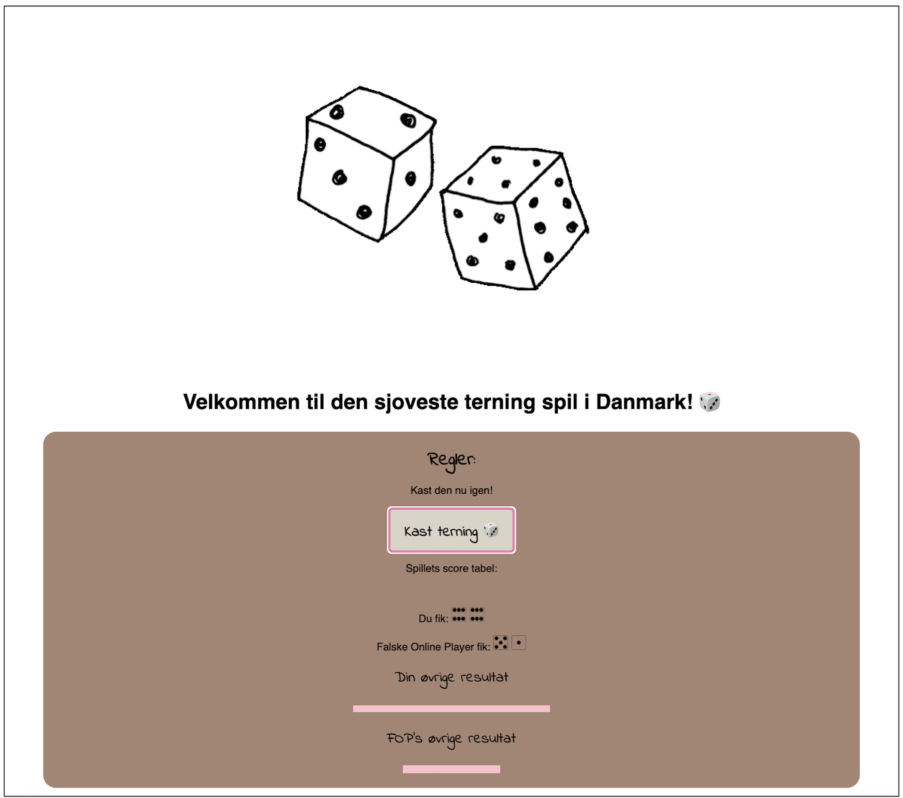
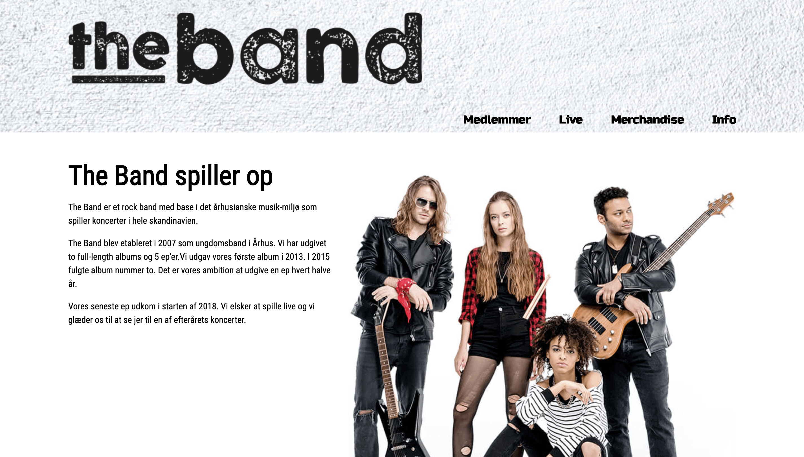

Velkommen til min portfolio!
Jeg hedder Pauline Holm og jeg er København-baseret webudvikling elev.
Udover det specialiserer jeg også i markedsføring og produkt og/eller forretningsudvikling.
Lad os skabe noget sammen!
⌊ Projekter ⌋

#skoleprojekt Et simpel ternspil skabt med brug af JavaScript igennem repetitionen på Grundførløbet.
#skoleprojekt Haj siden havde primært fokus på funktionaliteten. Siden inkluderer bl.a modal pop-up blokker, toggle (læs mere/mindre), formularer, søgningsværktøj og iframe.
#skoleprojekt En slags mini-spil for børn, hvor man kan skabe sin egen zoologiske have. Det består af formularen, hvor man kan vælge navn, emoji og lyd på dyren og sætte den i burden i vælgfri område på siden.

#skoleprojekt The Band siden havde fokus på opsummering af HTML og CSS basics igennem Grundførløbet 2.
#skoleprojekt
"Hjemmesiden for Webudvikler Uddannelsen på Roskilde Tekniske Skole" var en gruppeprojekt, hvor sammen med tre andre elever har vi skabt en beskrivende hjemmeside om vores uddannelse. Siden bestå af information, eksempler på Webudviklere, tilmelding. Målet var at give så mange relevante informationer for potentielle elever som muligt.
#skoleprojekt Arne side var en udfordrende opgave, hvor vi fik kun skærmbilledet af hvad vi skulle skabe. Formålet var at vi skulle finde ud af selv hvilket værktøjer er nødvendig til at performe den samme hjemmeside.
Erhvervsakademiuddannelse inden for service management: Serviceøkonom
Copenhagen Business Academy
Professionsbachelor: Innovation og Iværksætteri
Erhvervsakademi Aarhus
Erhvervsuddannelse (EUD): Webudvikler
Roskilde Tekniske Skole
⌊ Kompetencer ⌋
Fremstilling, bygning og opdatering/vedligeholdelse af hjemmesider. Med fokus på design, publicering og programmering.
På min nuværende uddannelse udvikler jeg IT-relateret kompetencer, færdigheder og løsninger hver eneste dag. Kendskabet og flydendehed i HTML og CSS er stærke og skrider frem foreløbigt, hvor JavaScript er stadig en hverdags spændende udfordring.
Hypertext Markup Language er det mest afgørende værktøj for opbyggelse af hjemmesider. Kombineret med CSS, hjælper med at sætte hele layoutet op, med JavaScript tilføjet, er der også funktionaliteten i pakken. Erfaringen med dette mark-up sproget gav mig evne til at bygge responsive og semantiske hjemmesider fra bunden.
Ved brug af Cascading Style Sheets,
udviklere formaterer hjemmesider, bl.a deres design og layout. Den visuelle del af hjemmesidens udviklingsprocessen er den mest spændende, ikke desto mindre udfordrerende og kreativitetskabende forløbet for mig. At dybbe ned i nysgerrigheden omkring design, layouts of farve paletter er en rene fornøjelse.
JavaScript kaldes for "fremtidens teknologi" der findes i den nuværende IT verden. Den er hele tiden i foreløbig udviklingsprocessen og derfor, for at kunne følge med, er man nødt til at opdatere sig selv og lære noget ny hele tiden. Jeg er selv relativ ny til denne teknologi og tager den som den mest spændende udfordring.
Professionsbachelor var en meget spændende eventyr, fyld med relevant videnskab, innovation og fokus på markedsforståelse. Ved brug af relevante værktøjer, som bl.a Design Thinking, Effectuation og Lean Start-up i praksis, havde vi klart afspejling af real-life forretningsmiløer.
I Bachelor's specielle har jeg forenet teoretisk videnskab sammen med erfaringen fra den reel verden (Praktik som Foreign Market Business Developer) og udført en markedsanalyse med fokus på kulturelle forskelle vedrørende forretningsledelsen og udvikling.
Med det polske sprog som modersmål, det engelske sprog som jeg har læst min Bachelor på og dansk som min hverdagssprog...min sproglig færdighed er på et høj niveau, med en stor potentielle for vækst og udvikling. Har allerede haft mulighed for at prøve denne styrke med direkt oversættelser mellem nævnte sprog igennem praktikken hos Wedbox Aps, hvor jeg var blandt andet ansvarlig for oversættelser på de digitale medier.